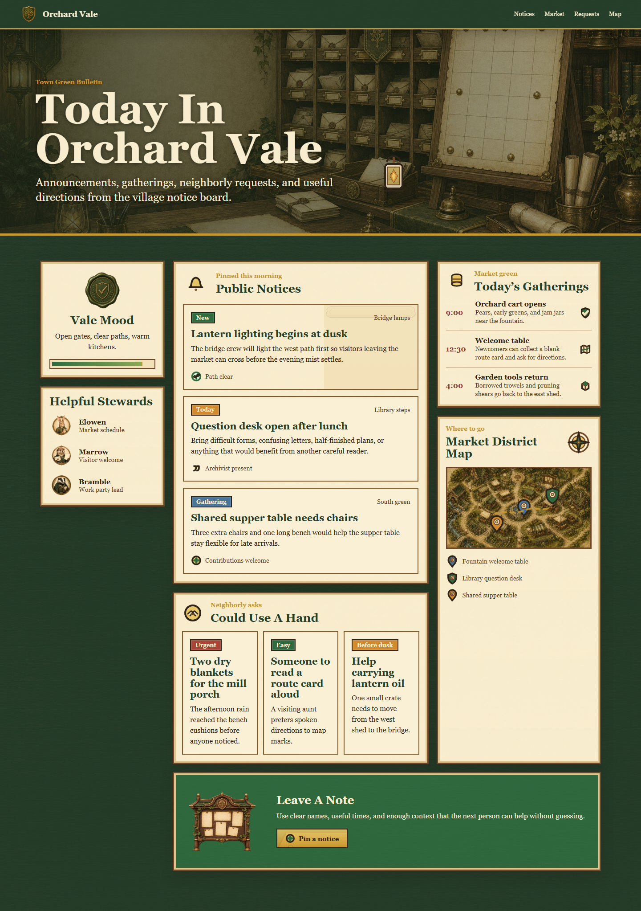
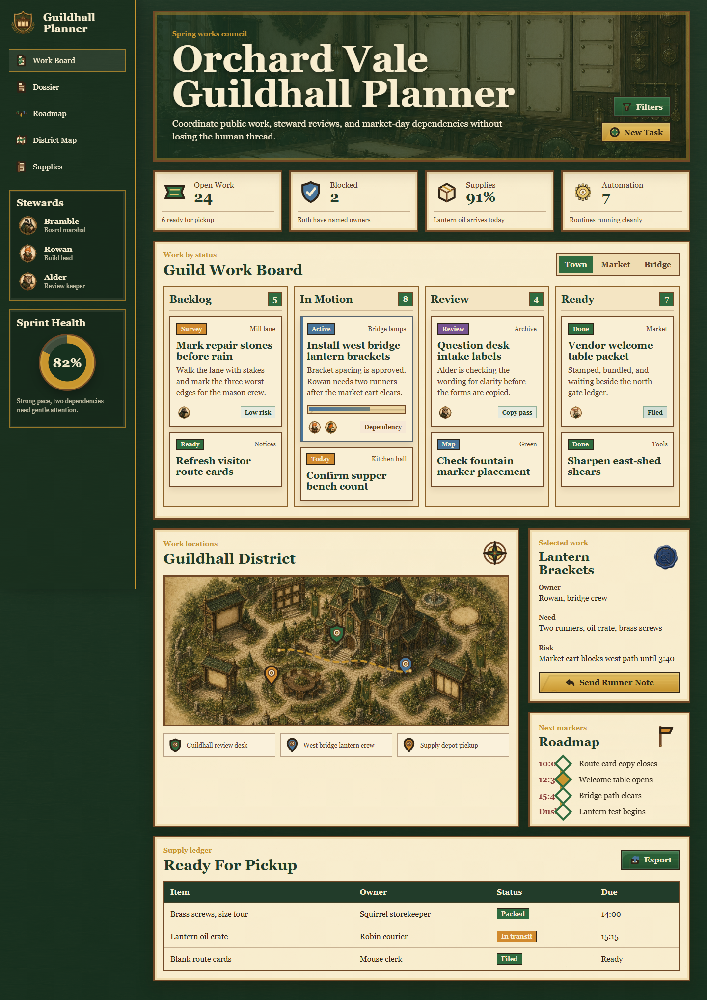
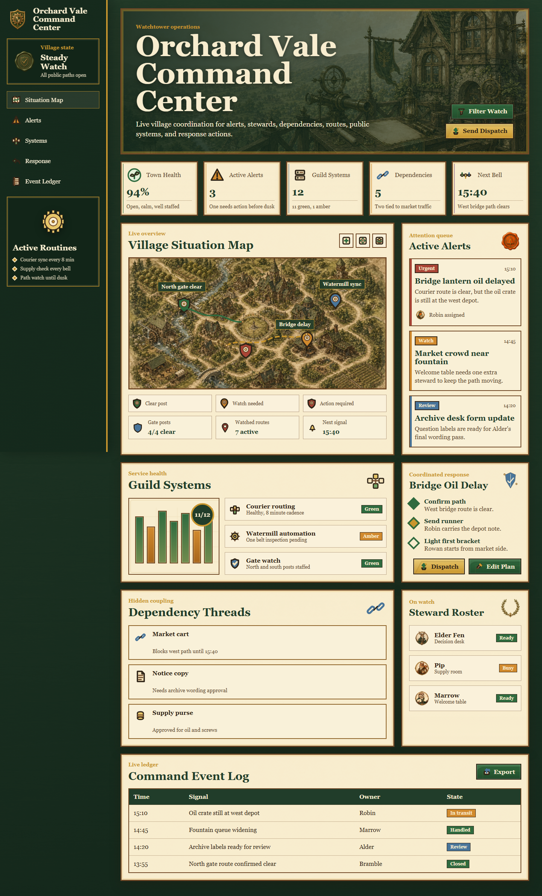
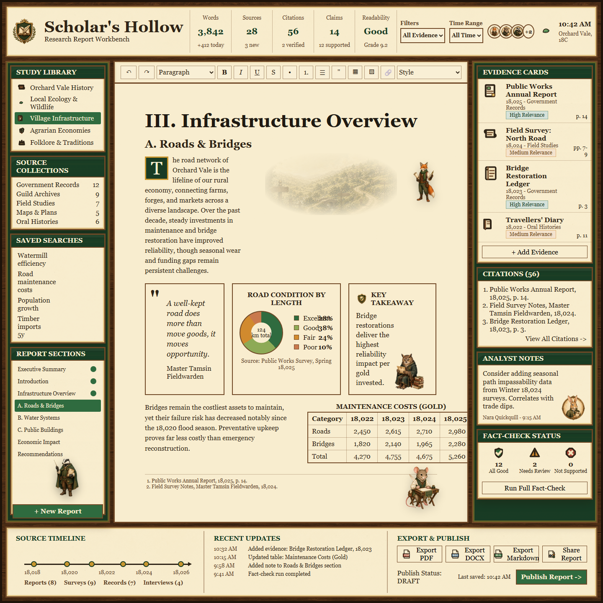
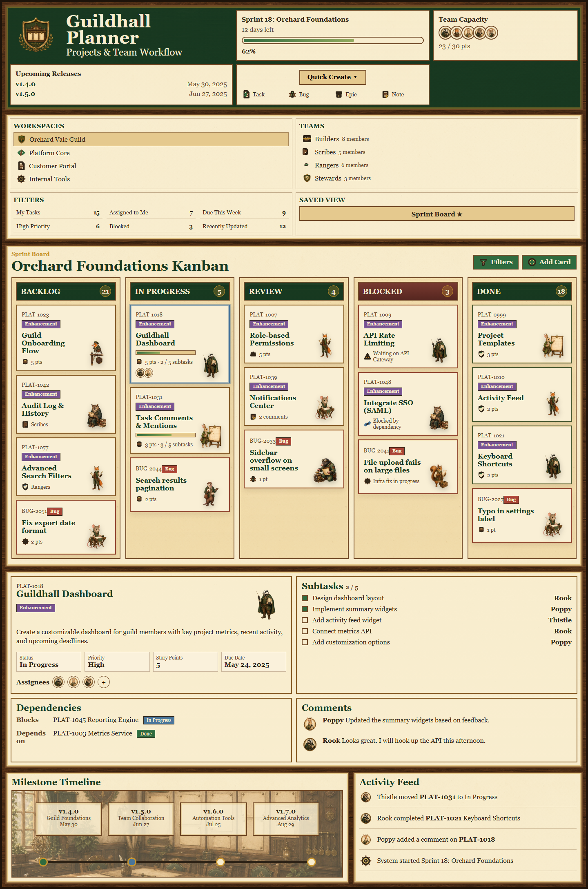
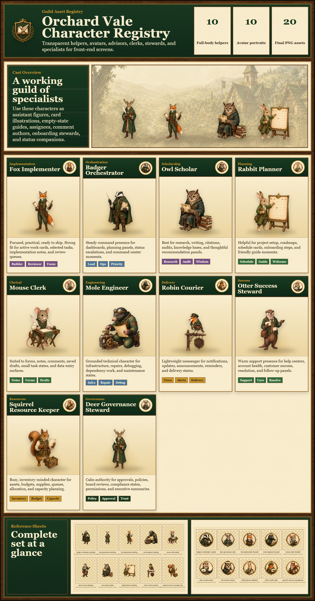

Demo Directory
Orchard Vale Theme Demos
Start here to explore the full set of HTML front-end experiments, from a simple article through dense dashboards, mock-up imitations, and asset galleries.Recommended Tour
Move from theme feel to production vocabulary
- Articlefeel the tone
- Notice Boardsee medium density
- Plannertest app layout
- Command Centerpush dashboard complexity
- Pattern Libraryinspect the kit

Friendly Town Article
A readable editorial proof page about Orchard Vale as a welcoming place. Best first stop for tone, scenery, parchment rhythm, and warm storybook styling.
Open Demo
Town Notice Board
A public dashboard with notices, events, steward avatars, map cards, requests, badges, and civic information layout patterns.
Open Demo
Guildhall Planner
A productivity cockpit with app navigation, metrics, Kanban lanes, selected-work details, timeline, district map, roster, and supply ledger.
Open Demo
Command Center
The dense operations showcase: live situation map, alert queue, system health charts, response workflow, dependencies, roster, and event ledger.
Open Demo
Scholar's Hollow Workbench
A close research-and-writing mock-up imitation with report metrics, study library, document editor, evidence cards, citations, fact-checking, and export controls.
Open Demo
Guildhall Project Board
A board-first Kanban imitation for projects, with top controls, five lanes, dense task cards, character helpers, selected-card details, milestones, and activity feed.
Open Demo
Character Registry
A full cast showcase for every final Orchard Vale full-body helper and matching avatar, shown at generous sizes with role guidance.
Open Demo
Asset Pattern Library
A tabbed specimen book for scenes, maps, frames, panels, heraldry, icons, motifs, data visualization pieces, textures, empty states, motion, and UI recipes.
Open Demo